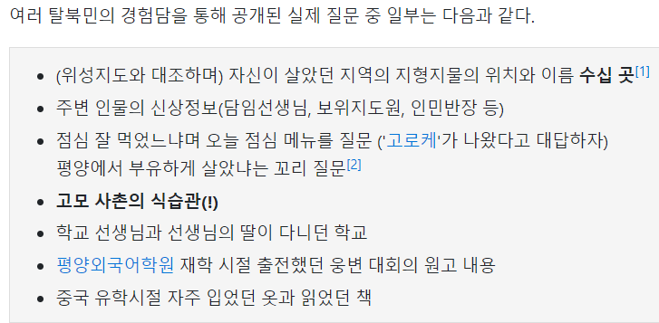

국정원의 정보력

국정원의 정보력
유출한 새끼는 진심으로 총살시켜야하는데
누군지 유출됨 누군가 죽일듯
총살도 아깝다. 죽을때까지 고문해서 넋을 길러야지. 북한에서 협조하던 휴민트들 잔인하게 쓸려나갔을텐데.
기리다
착하네 이 사람 안죽을 만큼 고문하고 치료 하고 또 고문해서 오래 오래 살게 해야지
깔끔하게 북송해야지 그냥
북송시키면 영웅환대임
흑차를 마신 요원들이 이중휴민트인 겁니까?
너, 부유하게 컸어?
휴민트 조져져서 아직도 가능함?
탈북민들 교차검증
근데 이젠 탈북도 잘 못하잖음
휴민트 다 쓸렸잖아
휴민트 타격입은건 분명하지만 다 쓸리고 아예 없는지, 남아있고 다시 복구중인지 우리가 알 길은 없지 않나
알길은 없지만 그쪽 인사들은 이제 우리를 믿지 못하는게 증명이 되어버린 상태는 활동 복구도 많이 어려워 졌을듯
보통 유출되면 몇년 내로 미복귀 인원은 전부 사망처리하는 이유가 있으니...
이미 몇년 지나서 실제로 죽었다고 봐야함
들키거나 유출시에 죽음 각오도 다 하고 휴민트 인원으로 사는거라
알 길도 없고, 우리가 알아서도 안됨.
저거 휴민트도 휴민트인데 탈북민한테 듣는 정보가 많아서 아직도 될 거임
ㅆㅂ 유출시킨 개쌍놈의것 그냥죽이면안됨
휴민트 정보 유출자는 죽었겠지? 착한 공권력의 보복을 보여주세요 국정원형님들
ㄹㅇ 제발…글고 착한 공권략도 아니지뭐 ㅅㅂ..
뉴스도 안나오게 쥐도새도모르게 세상깔끔하게 일처리좀 제발
갈아서 돼지밥으로 줘야됨 애국자가 몇이나 죽은거냐 진짜
탈북자 유튜버 한송이? 그 사람이 그랬자너,
국정원에서 조사 받는데 자기 사는 동네 다 알고 있어서 깜짝 놀랐다고...
심지어 우리는 잘 듣보도 못한 양강도....
탈북민 교차검색으로 다 조지기때문에 어설픈 사칭과 간첩진입이 힘들다함. 뭐 성공한 사람도(간첩?) 있겠지만 자본주의 맛보면 나라도 배신때림 ㅋㅋㅋ
유출 시킨 새끼도 당연히 죽일 놈이지만
저런 정보 관리를 허벌로 한게 어이가 없음
유출한새끼는 이미 이세상사람 아닐거고 관련자들 다른방식으로 처벌받았겠지 법의 테두리 밖에서 일하는 곳인데
법대로 했겠어?
와 근데 저걸 어케아는거지
전에 외국인인가 북한 동네 영상 촬영하고 지나가는 사람들하고 얘기하는것도 찍은거 봤는데 그런식으로 파악하지 않았을까 상상함
촬영하는 정도로는 내부 정보를 파악할수 없음. 미국도 드론이나 위성이 있다고 해도 대태러때 내부적인 접근은 사람이 필요했음
- 위성정보로 지형지물 정보를 시간순으로 저장
- 돈을 주고 정보를 사옴(주민정보나 기타 정보, 혹은 출판된정보. 도서정리사업때문에 출판된 정보의 경우 일본에 의외로 남아있음)
- 3만명에 이르는 탈북자들의 인생수기 및 조사과정에서 나온 정보를 교차해서 만듬.
ai
국정원 아키네이터를 조심하라 ㅋㅋㅋ
탈북자들 정보가 빵빵해서 자기도 가물가물한 정보들 다 알고 있다더만...
옆집에 대추나무 있지 않소? 하면 아뇨 대추 아니고 감나무 에요 하면 음 진짜네 하고 이런다더만..
탈북민들도 북한에사는사람들아니면 존나 상세하게 알수가없는데 국정원은 알고있다라고
예전엔 간첩일까봐 훠어어얼씬 더 빡세게 조사했을테니 그 db 가지고 있으면 무적이지
빨갱이 해군기지 지하갱도 구조하고 레일 폭이 이런건 탈북자 증언이던데
그랬는데 하이드라한테 잠식당하고 있어서 미국도 정보 안줄려고함
고모사촌의 식습관은 무서워
그랬었는데 지금은 블랙요원 분들이랑 휴민트가....